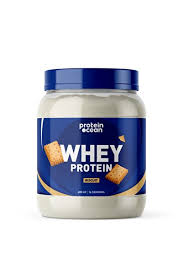
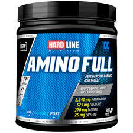
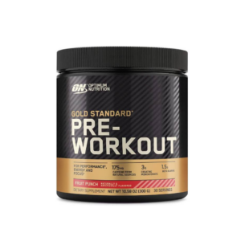

Protein Tozu
Protein tozu, vücut geliştirmecilerin kaslarını güçlendirmelerine ve onarımına yardımcı olmak için kullanılan bir supplementtir.
Protein, kasların yapısında bulunan temel yapı bloklarından biridir ve sporcuların yeterli miktarda protein almaları önemlidir.
Protein tozu, kolayca hazırlanabilir, sindirilebilir ve çeşitli tatlar sunabilir. Ancak, aşırı kullanımı karaciğer ve böbrek sorunlarına neden olabilir.
Creatine

Creatine, vücuttaki kaslarda doğal olarak bulunan bir maddedir ve kasların enerji üretiminde önemli bir rol oynar.
Creatine supplementleri, sporcuların performansını artırmak ve daha hızlı toparlanmalarına yardımcı olmak için kullanılır.
Creatine kullanımı, kas kütlesinde artışa ve daha fazla güce neden olabilir, ancak bazı kullanıcılar su tutulması, karın ağrısı ve ishal gibi yan etkiler yaşayabilirler.
Amino Asit
Amino asitler, proteinlerin yapısında bulunan yapı taşlarıdır. Supplement olarak kullanıldığında, amino asitler kasların onarımına ve büyümesine yardımcı olabilir.
Amino asitsupplementleri, özellikle egzersiz sonrası kas yorgunluğunu azaltmada etkili olabilir ve kasların daha hızlı toparlanmasını sağlayabilir.
Ancak, aşırı kullanımı böbrek sorunlarına, mide rahatsızlıklarına ve kan şekeri seviyelerinde dalgalanmalara neden olabilir.
Pre-Workout
Antrenman öncesi vücut geliştirmeciler tarafından atletik performansı artırmak için kullanılan ürünlerin genel bir terimdir.
Egzersiz sırasında dayanıklılığı, enerjiyi ve odaklanmayı artırmak için kullanılır.Pre workoutun aşırı tüketiminden kaynaklanabilen yan etkileri,
kişiden kişiye çeşitlilik gösterebilir ama örnek vermek gerekirse bunlar; çarpıntı, mide rahatsızlıkları ve psikolojik sıkıntılar şeklinde kendini gösterir.